Numerical Algorithms for Simulating Three Modes of Heat Transfer
By Charles Xie ✉
Energy2D is an open-source interactive multiphysics simulation tool that I have been developing for research and education purposes. It can be used to simulate all the three modes of heat transfer: conduction, convection, and radiation. The three modes are also coupled to some extent (a completely accurate coupling like what Mother Nature does may be too hard to achieve). This article opens the black box and describes the numerical algorithms under the hood of Energy2D. It introduces only the algorithms for heat transfer and fluid dynamics. For the coupling with particle dynamics, see this article.
Simulating thermal conduction

Figure 1: Comparing conduction from sources at different temperatures
The thermal conduction for heterogeneous media is modeled using the Heat Equation as follows:
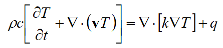
Equation 1
where T(x, y, z, t) is the temperature distribution, k is the thermal conductivity, c is the specific heat capacity, ρ is the density, v is the velocity field, and q(x, y, z, t) is the internal heat generation (as opposed to external heating implemented as a boundary condition). The Heat Equation has two parts: the diffusion part characterized by the conductivity field function k(x, y, z) and the advection part characterized by the velocity field function v(x, y, z, t). The internal heat generation function q(x, y, z, t) can be thought of as a driving force for diffusion and advection. Equation 1 is discretized in both space and time domains through a finite-difference time-domain (FDTD) method. An implicit FDTD method is used to achieve better numerical stability:
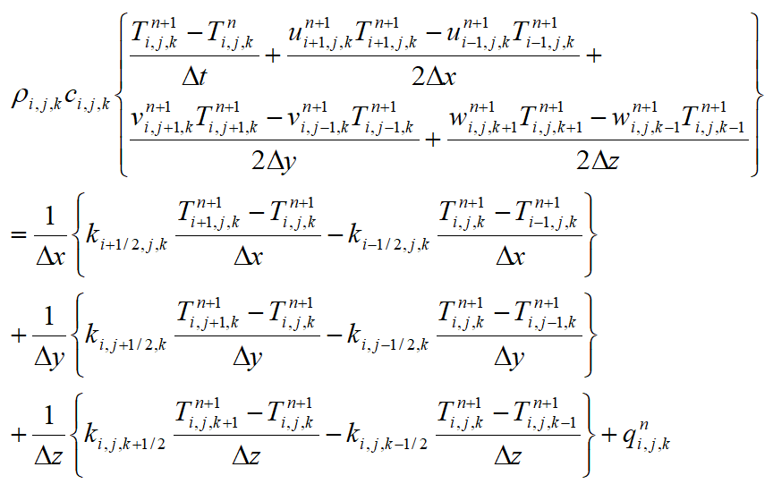
Equation 2
where M>i≥0, N>j≥0, and L>k≥0, with M, N, and L representing the numbers of cubic voxels in x, y, and z directions, and Δx, Δy, and Δz are the lengths of the cubic voxels in the three directions, respectively. Δt is the time step. In theory, an implicit method is unconditionally stable, allowing any time step to be taken, and the simulation will not “blow” up. In practice, however, the advection part of the Heat Equation can cause numeric instability, especially when the velocity is high. What is more, a numerically stable solver does not necessarily produce scientifically accurate results. Note that in Equation 2 we also avoid directly calculating the spatial derivatives of the conductivity field function, which could be very large at the interfaces between two distinct types of media and therefore could result in undesirable numeric instability.
Let:
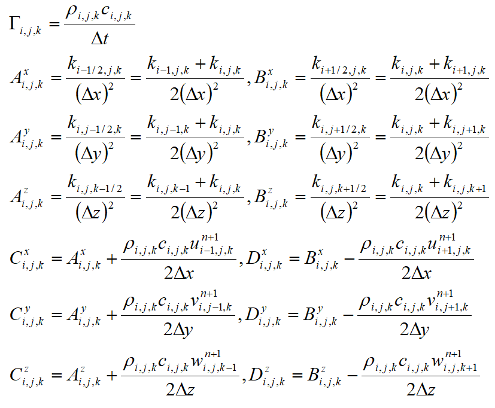
Equation 3
Equation 2 can be rewritten as:
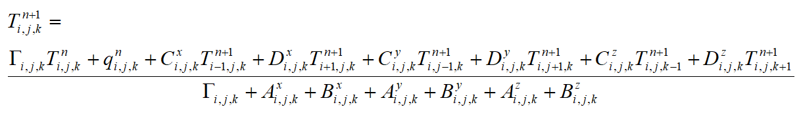
Equation 4
This is a very sparse matrix that can be solved efficiently using a relaxation method.
Several types of boundary conditions can be used. The first kind is the Dirichilet boundary condition, which maintains the temperature at the boundary. The second kind is the Neumann boundary condition, which maintains the flux at the boundary. Mixed boundary conditions may also be applied.
Simulation thermal convection

Figure 2: Comparing convection from sources at different temperatures
Fluids can transfer heat through forced and natural convection. Convection differs from conduction in that heat moves along with molecules in convection but molecules exchange only momenta — not positions — in conduction. In Energy2D, we only consider incompressible Newtonian fluids, which can be modeled by the following form of the Navier-Stokes equation:
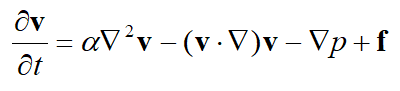
Equation 5
where v is the velocity vector, a is the kinematic viscosity, p is the pressure, and f is the body force such as gravity or buoyancy. The first term on the right-hand side of Equation 5 describes the diffusion of momentum. The second term describes advection. The continuity condition ensures the conservation of mass (as our fluids are incompressible, the mass in every voxel must not change):
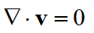
Equation 6
For the temperature distribution to affect the flow of the fluid, we can add a thermal buoyancy term, known as the Boussinesq approximation, to the body force f(x, y, z, t):
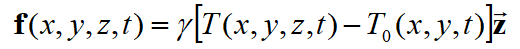
Equation 7
where T0(x, y, t) is the average temperature of the column of fluid at the location (x, y) and at time t and g is the thermal expansion coefficient. The Navier-Stokes equation (Equation 5) can be decomposed into two steps (assuming a uniform distribution of pressure or incorporating the pressure gradient term into the body force term):
1. The diffusion step
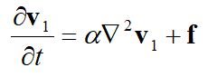
Equation 8
2. The advection step
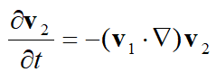
Equation 9
The diffusion step Equation 8 can be solved efficiently using a relaxation method like in the case of solving the Heat Equation, whereas the advection step Equation 9 can be solved using the MacCormack method, which consists of the following two steps:
1. The predictor step
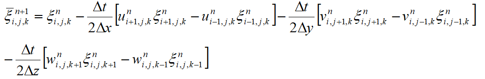
Equation 10
2. The corrector step
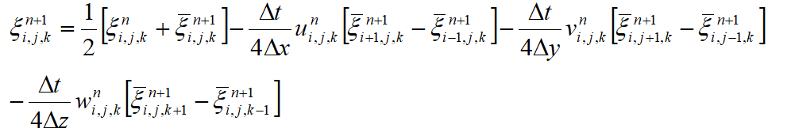
Equation 11
The function ξ can be any component of the velocity vector (u, v, w).
The solution of Equation 5 does not automatically satisfy the conservation of mass. The mass continuity condition expressed in Equation 6 must be imposed at each step. This condition is also important in simulating convective loops as it forces the velocity fields to have vortices. The discretized form of the continuity equation requires that:
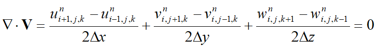
Equation 12
Using the Helmholtz decomposition (the fundamental theorem of vector calculus), a vector field can be decomposed into the following form:
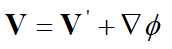
Equation 13
where V’ is a divergence-free vector field
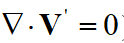
Equation 14
and ϕ is a scalar field. Applying the gradient operator to both sides of Equation 13, we obtain:
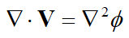
Equation 15
This is a Poisson equation for the scalar field ϕ, given that V is known. If ϕ can be solved, then we can obtain the divergence-free solution by subtracting ∇ϕ from V (see Modeling the Motion of a Hot, Turbulent Gas by Foster and Metaxas):
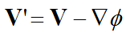
Equation 16
Equation 16 can be discretized as follows:
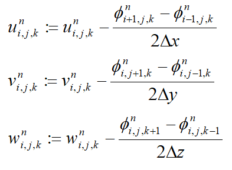
Equation 17
Again, the Poisson equation can be solved by using a relaxation method. The method uses the following iteration until convergence is reached:
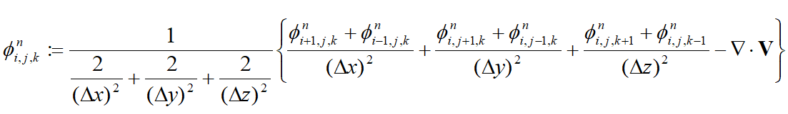
Equation 18
A multigrid method may be used to accelerate the convergence. If accuracy is less important, such is in the case of producing certain visual effects for animations or games, 5–20 iteration steps can be used without worrying about whether or not the solution has truly converged.
Simulation thermal radiation

Figure 3: Comparing radiation from sources at different temperatures
Heat can transfer at the speed of light through thermal radiation. The Stefan-Boltzmann Law describes how the power E emitted from an object depends on its temperature:
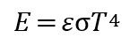
Equation 19
where σ is called the Stefan constant, ε is the emissivity (1 if the object is a perfect black body and 0 if it is a perfect reflector), and T is the temperature in Kelvin.
For a system that has many objects, we have to discretize every one of them into many small patches {dAi} in order to model the radiative heat transfer among them. The power density given away by each patch is called radiosity (denoted by B), which is governed by the following integral equation (this is in fact an inhomogeneous Fredholm equation of the second kind):
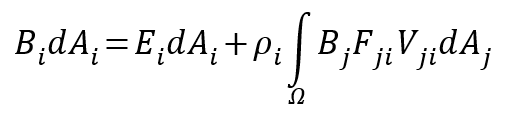
Equation 20
where Bi is the outgoing power per unit area from patch i, Ei is the emission power per unit area of the patch, ρi is the reflectivity of the patch, dAi is the area of the patch, Fji is the view factor (dimensionless), and Vji is the visibility function (0 if patches i and j cannot “see” each other, otherwise 1). The visibility function can be calculated using collision detection between the rays emitted by the source patch and the target patch, which means that the radiation solver can handle both the convex and concave shapes.
The view factor from a surface A1 to a surface A2 defines the proportion of the radiation leaving A1 that ends up striking A2. In 3D, it can be calculated through the following formula based on the etendue of a ray:
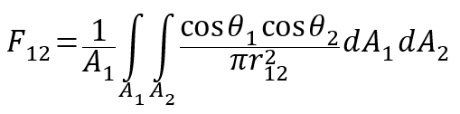
Equation 21
where r12 is the distance between the two surfaces, and θ1 and θ2 are the acute angles between the surface normal and the distance vector. In 2D, it can be calculated by replacing the areas with lengths and r212 with r12:
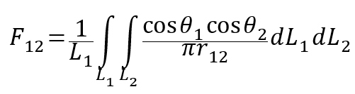
Equation 22
The net energy that converts into thermal energy at a patch comes from the difference between the portion of energy reflected from all other patches that becomes absorbed by the patch and the energy that it emits:
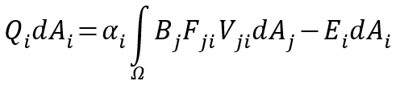
Equation 23
where αi is the absorptivity (the ability to absorb electromagnetic radiation) of the patch’s material. This equation can be coupled with the Heat Equation and the Navier-Stokes Equation to allow radiation to interact with the flow of heat and mass. Equations 21 and 23 can be discretized into the following matrix forms:
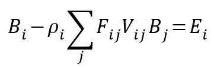
Equation 24
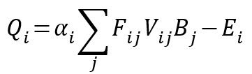
Equation 25
Equation 24 can be solved using a relaxation method, such as the Gauss-Seidel method, using the emission power at each patch as the initial guess. In a transient simulation, only a few relaxation steps are needed as the time-dependent solution is already somehow iterative. The thermal power generated at each patch Qi can then be derived using Equation 25.